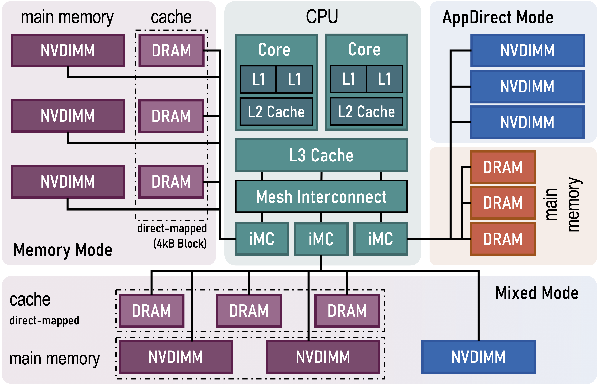
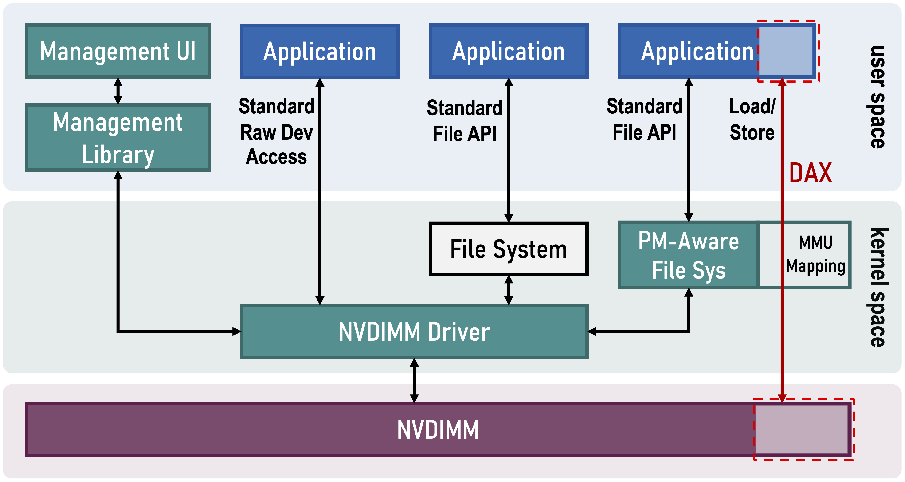
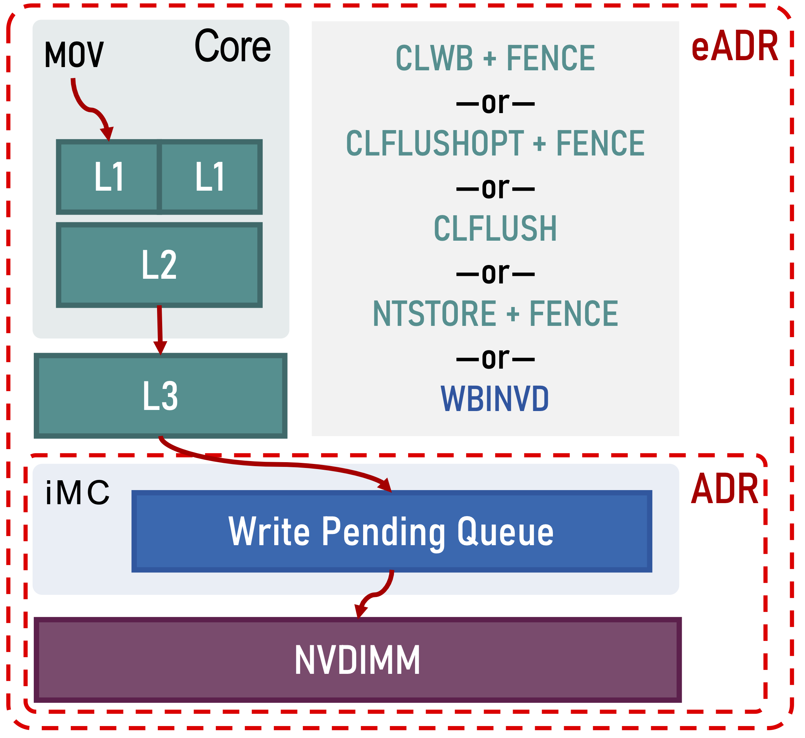
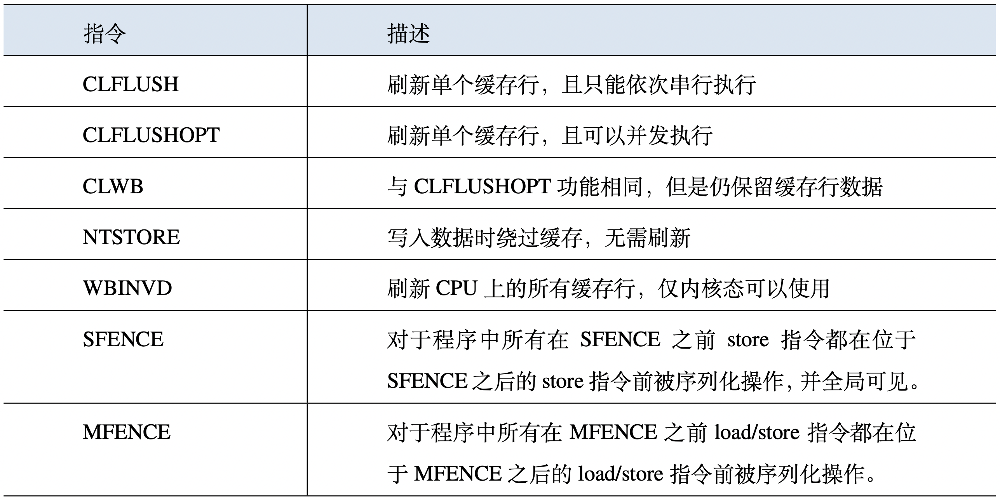

最近 Intel 宣布将终止了 Optane Memory 的业务(Intel Kills Optane Memory Business Entirely)，预计将会给学术界的相关研究热潮泼上一盆冰水。最近几年由于 Intel Optane DC Persistent Memory (PMem 或 NVDIMM) 的发布，学术界也掀起了一股针对 PMem 的研究热潮。笔者在研究生期间也曾参与 PMem 的研究，并借此水了一篇论文。本文总结一下 NVM 的编程模型，纪念一下这个行将成为历史的“emerging technology”🙃。
Intel PMem 连接到内存总线上和 DRAM 共享 iMC (integrated Memory Controller)，并提供了三种模式：Memory Mode、AppDirect Mode 和 Mixed Mode，如下图所示。在 Memory Mode 下，PMem 用作主存，而 DRAM 充当直接映射缓存。在 AppDirect Mode 下，DRAM 仍然作为主存，而 PMem 则提供持久性数据存储，通过文件系统进行管理和访问。在 Mixed Mode 下，一部分 PMem 被配置为 AppDirect Mode 访问模式，剩下部分则作为主存，此时 DRAM 也被用作直接映射缓存，对于应用程序和操作系统都不可见。

SNIA (Storage Networking Industry Association) 定义了 NVM 作为持久性存储器时的编程模型[1] 如下图所示。其使用标准文件语义提供命名、权限管理和内存映射等功能。NVDIMM Driver 提供了用于管理NVM的配置和运行状况的访问接口，还提供了标准块存储设备接口以便于面向传统存储设备设计的应用程序仍然可以使用文件接口 (File API) 访问/或直接进行裸设备访问 (Raw Device Access)。图中右侧部分是 NVM 编程模型的重点所在，其中 PM-Aware 文件系统也使用文件语义进行 NVM 访问。但于传统文件系统不同的是，PM-Aware 文件系统 (如 ext4, xfs) 提供了直接访问文件数据的 DAX (direct access) 特性，在使用内存映射接口 (如 Linux 中的 mmap) 时绕过内核中的页面缓存 (page cache)，直接访问位于 NVM 中的数据本身，因而可以在无需内核介入的情况下就地修改数据而无需进行数据拷贝。此外，Linux 内核还提供了设备直接访问 (device DAX)[2] 特性，可以在不使用文件系统的情况下访问 NVM 中的数据，因而也不支持命名和权限管理的功能。

Intel、AMD 等芯片供应商为实现 NVM 中数据持久化提供了持久域 (persistence domain或power-fail protected domain)[3] 的概念，位于其持久域中的数据在断电时使用平台所保证提供的电能将数据刷新到 NVM，因此进入持久域与否意味着数据是否会在发生电源故障时丢失。Intel 的硬件平台提供了 ADR (asynchronous DRAM refresh) 的特性用于实现持久域，以及 eADR (enhanced asynchronous DRAM refresh) 如下图所示。ADR 仅包括内存控制器中的写等待队列 (write pending queue) 和 NVM，且只在断电时刷新位于持久域中的数据，并不会主动刷新 CPU 中的缓存数据。eADR 则可以主动刷新 CPU 缓存而无需应用程序执行刷新操作，但是需要调用不可屏蔽中断 (non-maskable interrupt, NMI) 来进行缓存刷新。

虽然 eADR 可以主动刷新缓存数据，但是应用程序仍然需要执行内存栅栏操作以保证写入顺序的正确性。为了支持缓存中的数据能够被按序刷新到持久域中，Intel 提供了一组缓存行刷新和存储屏障 (store barrier) 指令，这些指令详细信息的如下表所示。

为了保证数据写入时的故障原子性 (failure atomicity) 以确保系统在断电或崩溃后能够恢复到一个一致性的状态，我们可以使用上述的缓存行刷新和内存栅栏指令，确保数据在断电前被刷新到持久域中。此外，上层的应用程序可以结合日志和写时复制等技术，在写入大量数据到 NVM 中时保证故障原子性，使得在系统崩溃后能够恢复到一个一致性状态。为了减轻在应用程序中手动添加缓存行刷新、内存栅栏和写入日志等这类低级别操作所带来的编程负担，Intel提供了持久性内存开发工具包 (Persistent Memory Development Kit, PMDK[4]) 来为开发人员提供高层次的编程接口，方便程序员进行 NVM 编程。
参考文献：
1. SNIA. Persistent Memory Programming Model. 2020. https://www.snia.org/educational-library/persistent-memory-programming-model-2020.
2. Dan Williams. “Device DAX” for persistent memory. 2016. https://lwn.net/Articles/686664/.
3. Steve Scargall. Programming Persistent Memory: A Comprehensive Guide for Developers. 2020. https://pmem.io/books/.
4. Intel. Persistent Memory Development Kit (PMDK). 2021. https://pmem.io/pmdk/.